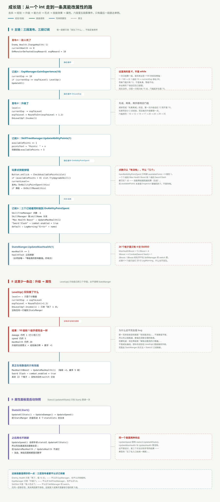

一句话说清
成长链不是一条直线，是三段「发布—订阅」串起来的接力：
敌人死 → 经验 → 升级 → 能力点 → 花点 → 技能效果 → 属性
每一段都只发「发生了什么」，不指定谁来听。所以它能跑通，但也因此很难追——你没法在 LevelUp() 里按 Ctrl+F 找到「谁改了攻击力」，因为那里根本没有这行代码。
全链一张图

第一段：敌人只说「我死了」
public int expReward = 10;
public delegate void MonsterDefeated(int amount);
public static event MonsterDefeated OnMonsterDefeated;
if (currentHealth <= 0)
{
OnMonsterDefeated(expReward);
Destroy(gameObject);
}expReward 写在敌人身上而不是玩家身上，理由是「值多少」属于敌人的配置，「怎么用」才是玩家的规则。
整条载荷只有一个 int。Enemy_Health 不认识 ExpManager，连它的类型都没出现在 using 里——这是全工程唯一一处完全解耦的边。
第二段：ExpManager 累加与升级
public void GainExperience(int amount)
{
currentExp += amount;
if (currentExp >= expToLevel) { LevelUp(); }
UpdateUI();
}
private void LevelUp()
{
level++;
currentExp -= expToLevel;
expToLevel = Mathf.RoundToInt(expToLevel * expGrowthMultiplier);
OnLevelUp?.Invoke(1);
}三个细节值得停一下：
① expToLevel 是「本级门槛」，不是「累计经验」。 所以升级时是 currentExp -= expToLevel（把刚跨过的那道坎扣掉），进度条用 expSlider.maxValue = expToLevel（满格 = 本级满）。
② 顺序是「先减、再乘」，两步都用旧门槛。 写反了会吞经验，而且每次都吞一点，很难查。
③ 门槛序列： 10 → 12 → 14 → 17 → 20 → 24 → 29 → 35 → 42 → 50。RoundToInt 把 ×1.2 打成了台阶。
第三段：点数与技能
OnLevelUp?.Invoke(1) 被 SkillTreeManager 接住：
private void OnEnable() { ExpManager.OnLevelUp += UpdateAbilityPoints; }
public void UpdateAbilityPoints(int amount)
{
availablePoints += amount;
pointsText.text = "Points: " + availablePoints;
}玩家点格子走的是另一条路：SkillTreeManager.Start() 里给每个格子的按钮绑了监听。
foreach (SkillSlot slot in skillSlots)
slot.skillButton.onClick.AddListener(() => CheckAvailablePoints(slot));然后 SkillSlot.TryUpgradeSkill() 才是真正花点的地方：
if (isUnlocked && currentLevel < skillSO.maxLevel)
{
currentLevel++;
OnAbilityPointSpent?.Invoke(this);
if (currentLevel >= skillSO.maxLevel) { OnSkillMaxed?.Invoke(this); }
UpdateUI();
}注意 OnAbilityPointSpent 是在扣点之前发的，真正扣点的动作在订阅者里：
private void HandleAbilityPointSpent(SkillSlot slot)
{
if (availablePoints > 0) { UpdateAbilityPoints(-1); }
}三个订阅者同时收到同一个事件
OnAbilityPointSpent 有两个订阅者，加上发布者自己就是三方：
| 订阅者 | 收到后做什么 |
|---|---|
SkillTreeManager | 点数 −1 |
SkillManager | 按 skillName 分支，改属性 |
SkillSlot（自己） | 判满级，满了再发 OnSkillMaxed |
SkillManager 里那个 switch 就是整个成长链唯一真正改属性的地方：
switch (skillName)
{
case "Max Health Boost": StatsManger.Instance.UpdateMaxHealth(1); break;
case "Sword Slash": combat.enabled = true; break;
default: Debug.LogWarning("Error" + skillName); break;
}到目前为止，升级一共只带来两样东西：能力点 +1、以及点数花出去以后血上限 +1。 攻击力、移速、耐打程度全都没动。
24 个格子，4 份 SkillSO
场景里 24 个 SkillSlot，但它们只挂了 4 份资产：
| SkillSO | skillName | maxLevel | 用它的格子数 |
|---|---|---|---|
MaxHealthBoost | Max Health Boost | 5 | 15 |
2Boost | 2Boost | 5 | 4 |
3Boost | 3Boost | 5 | 4 |
Combat | Sword Slash | 1 | 1 |
2Boost 和 3Boost 这两个名字不在 SkillManager 的 switch 里，所以点满它们只会打 20 行 LogWarning("Error2Boost")，什么也不发生。
加上 availablePoints 在 Inspector 里被硬编码成 5（不是存档、不跟等级走），这块面板现在的实际作用是「一个能加点血上限的 24 格占位图」。
前置解锁：只判「前置满了」，不判点数
public bool CanUnlockSkill()
{
foreach (SkillSlot slot in prerequisiteSkillSlots)
if (!slot.isUnlocked || slot.currentLevel < slot.skillSO.maxLevel)
return false;
return true;
}HandleSkillMaxed 在某个技能满级时，对所有未解锁且满足前置的格子调一次 Unlock()。
24 个格子里 15 个没有前置、9 个有 1 个前置。所以「点亮第一个技能」之后会连锁解锁一批——但解锁不等于能点，点还是要花点数。
属性面板为什么永远显示旧数字
StatsUI.UpdateAllStats() 只在 Start() 里被调一次：
private void Start() { UpdateAllStats(); }之后只有 StatsManger.UpdateSpeed() 会顺手调它：
public void UpdateSpeed(int amount)
{
speed += amount;
statsUI.UpdateAllStats(); // 只有这个更新面板
}而 UpdateMaxHealth() 和 UpdateHealth() 里没有这一行。
结果：吃加速道具 → 面板刷新；升级加血上限 → 面板不动。同一个类里三个方法，两种命运，纯粹是分别手写的结果。
这条链上最该补的一处
LevelUp() 只动 level / currentExp / expToLevel 三个字段，从不调用 StatsManger。所以：
- 10 级和 1 级的手感完全一样
level目前是个「解锁点数用的计数器」，不是成长曲线
补法不是在 LevelUp() 里直接改字段——那会让 StatsUI 继续显示旧值。正确的链条是：
升级 → StatsManger 暴露 AddDamage / AddMaxHealth 之类的方法 → StatsUI 订阅刷新
一句话总结
成长链的骨架是三组静态事件：OnMonsterDefeated、OnLevelUp、OnAbilityPointSpent。它们让「敌人 / 经验 / 技能」三方互不认识，这是全工程最干净的设计；但也让「升级到底改了什么」这个问题必须顺着三张表一路查下去才能回答——答案是：只改了血上限，而且还只改一次。
下一篇：物品与商店。